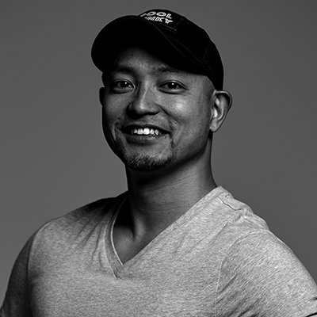

コミュニティオーガナイズドセッション
xR Tech Tokyo
講演情報
| 資料公開予定 | 公開予定 |
|---|---|
| スクリーンショット撮影可否 | 可 |
| SNS投稿可否 | 可 |
コミュニティ概要
xR Tech Tokyo は、2016年からおおよそ隔月で開催している VR, AR, MR 関連の開発者向け勉強会イベントです。本イベントは、発表 + 体験会ありの懇親会という2部構成になっています。2020 年は新型コロナウイルス感染症の影響を鑑み、オンサイト開催の xR Tech Tokyo を休止し、オンライン開催の WebXR Tech Tokyo を開催しています。
講演概要
xRで"リアルタイム"MVを作る際の注意点とその未来
xR(VR.AR.MR)でリアルタイムレンダリングのミュージックビデオを作る際に「注意するべき事項」や「Tips」について話します。特に「VR用に制作したリアルタイムMVをAR及びMRでそのまま体験する」ための演出設計やARとMRでのMV表現の注意点とxRMVの未来についてお話します。
YORIMIYA
巨大VR市場を作る鍵は”VR空間でしか生きられない人”をどう助けるか「無重力なプールVRが創る延命ビジネスに富裕層のお金が集まる未来」
VR市場の拡大には「VRの世界で過ごす必然性」を上げことが重要であると考えています。
本講演では無重力なプールVRの世界で24時間365日過ごす未来を創ることで誰にどう感謝され、なぜVR市場が拡大するのか、そんな未来予想を語らせていただきます。
西川 隼矢
WebXRにも対応しているBabylon.jsの最前線
近年、WebブラウザでもXRコンテンツを開発、動作させる環境が整いつつあります。Webブラウザで動作する3DCGを用いたコンテンツを開発するフレームワークの１つにbabylon.jsがあります。この講演では、babylon.jsの概要やコンテンツ開発方法、WebXR (Webブラウザ上でXRコンテンツを動作させる共通規格) への対応状況などを紹介します。
藤原 貴之
講演者詳細
-
🍿🐑が好きなめぐるーまーで雛乃木神社氏子の観測者, xR Tech Tokyo & WebXR Tech Tokyo 運営責任者, 2021-2022 Microsoft MVP for Windows Development, TechFeed # VR / AR / MR 公認エキスパート, NewsPicks Expert
-
2019/06 新卒で入社した会社を2ヶ月で退職→『STYLY』を開発するPsychic VR Labへ xR転職。中学、高校、大学はスポーツに専念。大学時代の専攻は『スポーツ教育』
Virtual Market 2にてVRライブを公式コンテンツとして展示したり、clusterで行われた「八月二雪×ぼっちぼろまる VR LIVE」にて演出を担当。VR、AR、MR全部やるマン。xRMV(ミュージックビデオ)やxRライブ演出が得意。 -

プールのことしかやらない会社(株)Rockin'Poolの代表取締役／日経トレンディ「2020ヒット予測」の【世界を変えるスタートアップ大賞】に選出／元競泳選手で元水泳インストラクターで元システムエンジニア／好きな言葉は『仮説検証』／なんでもプールに入れたがる／プールの可能性は無限大
-
入社以降、複数のシステム開発を経て、現在は3DCGを用いた保守作業訓練システム事業化に関する研究開発に従事。また、2013年のVRブーム以降、XR関係のコミュニティ活動を進め、2016年よりMicrosoft MVPを受賞。
Microsoft MVP for Windows Development / 博士 (情報科学) / International Display Workshop (IDW) プログラム幹事